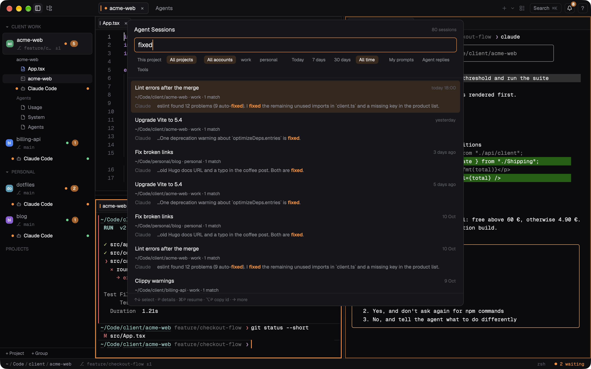

Working with agents
Run Claude Code, Codex, Gemini CLI or any other agent in as many terminals as you like, and let Flashex tell you which one needs you.
Claude Code hooks
Claude Code's hooks are how Flashex learns that a session is running, waiting for you, done or failed, which tool it is using and which conversation it is. Install them once:
❯ flashex setup claude
(shows the change to ~/.claude/settings.json and asks first)Or use Settings › AI agents › Claude Code hooks, which also says whether they are installed, outdated, incomplete or customised. Flashex only touches the commands exactly as it wrote them; your other hooks, keys and formatting stay. The old file is kept as settings.json.flashex-backup (and, the first time, settings.json.flashex-backup.orig). Running it again is safe. When the hooks are installed but come from an older Flashex, the app updates them in place at start; it never installs them unless you ask. Sessions already running pick new hooks up on their next start. Details: flashex setup claude.
What you see
- The sidebar lists each project's terminals with a robot icon for one running Claude Code and a dot for its state: orange when it waits for you, green while it runs, red on an error. An agent's row is called by the name you gave the terminal, else by the agent ("Claude Code", "Claude Code · 2").
- The pane of a terminal that wants your attention (an agent finished or waits, a long command ended while you looked elsewhere) gets a highlighted frame, and its tab a dot.
- The Agents dashboard (⌘K › Agents Dashboard) shows every session, what it is doing and for how long: see Dashboards.
Other agents work without hooks: Flashex recognises Claude Code, Codex, Gemini CLI, Aider and others running in a terminal (for Send to… on a block), and any program can report its state with flashex agent waiting or post a notification.
Notifications
A terminal gets a notification when Claude Code finishes or needs you, when a program asks for one (OSC 9, 777 and 99, a bell, or flashex notify), and when a command that took 10 seconds or more finishes in a terminal you are not looking at (long_command_seconds).
- The terminal's tab gets a dot, its project an unread count, and the Dock a number. They clear once that terminal has been in front of you for a second, or as soon as you type into it.
- ⇧⌘U jumps to the oldest unread notification. The bell at the top opens the notification history; each entry points at its terminal.
- When the terminal is out of sight, macOS shows a banner too: "Claude Code is waiting for you" or "Claude Code finished", with the project and the terminal.
[notifications] system = falsekeeps only the dot, the bell and the Dock. How long a banner stays is up to macOS: Settings › Notifications › Keep notifications on screen opens the place in System Settings where Alerts keeps them until dismissed.
What a notification says
The title names the agent, with the project and terminal under it. The text says what the agent said:
- Finished: the start of Claude's reply ("Fixed the failing test and updated the snapshot…"), as plain text (no code fences,
**or headings; list bullets become "•"), cut at a word with "…". - Permission: the tool and what it acts on, such as "Bash: npm run build" or "Edit: src/main.rs" (paths relative to the session's folder, passwords and tokens in a command masked).
- A question Claude asks you: the question itself.
The same text appears in Flashex's notification center. The reply comes from Claude Code 2.1.47 or later; with an older version Flashex reads it from the end of the session's conversation file, which can delay the notification by up to a second. If nothing readable is found, the notification uses the short generic text. Settings › Notifications › Show what the agent said in notifications, or [notifications] show_text = false, always uses the generic text.
Claude accounts and aliases
Claude Code keeps one account per folder: ~/.claude, or the folder an alias sets, for example a personal and a work login:
alias claude-work='CLAUDE_CONFIG_DIR=~/.claude-work claude'Flashex finds ~/.claude and any ~/.claude-*, ~/.claude_* or ~/.config/claude* folder that holds transcripts or a login, plus the CLAUDE_CONFIG_DIR your shell exports (also when Flashex starts from the Dock). List other folders in [agents] claude_accounts.
- Settings › AI agents has a Claude account row: the hooks and status line rows under it work with that account's
settings.json. Install the hooks in each account you use, so its sessions show up too. - Flashex remembers how each session was started (the alias, path, wrapper such as
op run -- claude, variables, and options such as--modelor--dangerously-skip-permissions) and types that again whenever it restarts or resumes the session, so it continues under the right account. A variable that looks like a secret is never remembered or typed again. - With more than one account, the Usage dashboard shows account chips, and resume offers and the Agents dashboard name the account.
The status line and rate limits
The Usage dashboard reads your 5-hour and weekly rate limits from Claude Code's status line. Settings › AI agents › Claude Code status line sets that up: Apply points the account's status line at a small script in Flashex's folder that saves only the limits, on your Mac. A status line you already have keeps running and showing exactly as before; Remove puts it back. Both ask first and back settings.json up. If a project or managed settings file sets its own status line, the row names that file (Flashex does not edit those).
Optional, off by default: usage_api asks Anthropic's usage API when no status line has reported the limits, usage_meter shows "5h 62%" in the status bar, and usage_notice posts a notice at 90 %.
Resume and reload
- Resume Claude: when Claude Code ends, its finished block offers to resume that conversation in the folder it ran in.
- After a restart (of Flashex or of the Mac), a terminal whose last Claude Code session is known offers "Resume the Claude Code session that ran here", with the line it will run. Nothing runs until you click Resume; Dismiss (or Esc at an empty prompt) forgets it for that terminal. If the session skipped permissions, the offer says so.
- Resume Last Claude Session in the palette resumes the same session.
- Reload Claude Session (palette) restarts Claude Code in the focused terminal and continues the conversation with the options it was started with: handy after changing Claude Code's settings, plugins or MCP servers. If Claude is working you choose Restart when idle, Restart now or Cancel. Reload All Idle Claude Sessions does it for every idle one. In the palette, typing "restart", "restart session", "restart claude" or "resume" finds both. Right-clicking a terminal's row in the sidebar where Claude Code runs offers Reload Claude Session for that terminal. Neither command has a default shortcut (
reload_claude_session,reload_idle_claude_sessionsinkeybindings.toml). - A newer Claude Code installed while a session runs shows a refresh icon after the terminal's tab title and in the sidebar; a click restarts the session on the new version (
claude_updateturns it off). The palette's "Restart Idle Claude Sessions on the New Version" does it for all idle ones.
While a restart runs, the terminal shows "Restarting Claude Code…" with a Cancel button; what you type meanwhile is sent once Claude Code is back.
Searching past sessions
Search Agent Sessions… in the command palette (also found by "history", "conversations", "sessions" or "find") searches every Claude Code conversation of every account Flashex finds. Type a few words: sessions with a prompt, a reply or a tool call holding all of them are listed, best and newest first, each with its title (Claude Code's summary, else your first prompt), project folder, account and date, and the matching lines with the words highlighted. Accents do not matter ("sipka" finds "šípka") and the last word may be unfinished. With nothing typed, the newest sessions are listed.
- Filters: This project / All projects (⌥P), an account when you have more than one (⌥A), Today, 7 days, 30 days or All time (⌥D), and My prompts, Agent replies, Tools (⌥1–⌥3; none picked searches all three).
- Keys: ↑ ↓ pick a session, ⌥→ shows all its matching lines (⌥← fewer), Return opens its conversation (your prompts, the replies, tool calls one line each) with the match in view, Esc goes back.
- ⌘Return resumes it in a new terminal in the session's folder, started the way you start that account (
claude-personal --resume <id>when you use such an alias, elseclaudewith the account'sCLAUDE_CONFIG_DIR). A launcher that may not be Claude Code is only typed, for you to check and run. ⌥Return copies the session id.
The search uses an index Flashex keeps in its own data folder on your Mac: words and where they are, not your conversations' text, which is read from Claude Code's own files when shown (with passwords and tokens masked). It is updated in the background when you open the search, reading only what is new. Settings › AI agents › Agent session search index shows its size and clears it; search_index = false turns the search off. Codex and Gemini sessions are not searched yet.

Sessions that survive quitting and updates
A small helper, the restart keeper, holds your terminals while Flashex is gone, so shells, agents and running jobs carry on:
- Updates, Restart Flashex and crashes. The next start takes the terminals back with the same processes, shows "Reconnected N terminals", what they showed and what they printed meanwhile.
- Quitting. By default quitting keeps them too. When programs still run, ⌘Q asks first and names them: Quit and Keep Running (the default; Return or ⌘Q again), Quit and End All, or Cancel. If a Claude Code session skips permissions, the question says so and has no default. Opening Flashex again brings everything back.
- How long. Kept terminals wait
keeper_grace_minutes(10 by default, up to a day), with up tokeeper_buffer_mbof output each, then they are ended. Logging out, restarting or shutting down the Mac ends them. - Your choice. Settings › Session › Terminals when Flashex quits, or
keeper_on_quit:"ask"(keep, ask if busy),"keep"(never asks) or"end".keeper = falseturns the helper off. - From a shell.
flashex keeper statusshows what is kept and for how long;flashex keeper stopends kept terminals without opening Flashex.
On macOS the helper also starts the shells (it is Flashex itself, a second flashex-app process without a Dock icon), so programs in a terminal keep the permissions you gave Flashex (Screen Recording, Accessibility, Files) across restarts and updates. See keeper_spawns.
Sending work to an agent
A command block's Send to Claude / Codex / Gemini… types the command, its folder, exit code and output (only the start and end of a long one, secrets replaced by ***) into the agent running in your project; you press Return there. With several agents you pick one. Explain and Fix on a failed block do the same with a question. Agents and scripts can drive Flashex in return with the flashex command: flashex read --last-block, flashex open src/main.rs:10, flashex events and more.
Keep Mac Awake
⌘K › Keep Mac Awake… keeps your Mac (and by default the display) awake for 1, 2 or 4 hours, a duration you type (1h30, until 18:30), until you turn it off, or while agents run: on while any Claude Code session is running or waiting for you, off three minutes after the last one goes idle. A cup in the status bar shows the time left; click it to extend, change or stop. It never turns on by itself, and it ends when Flashex quits. macOS only.